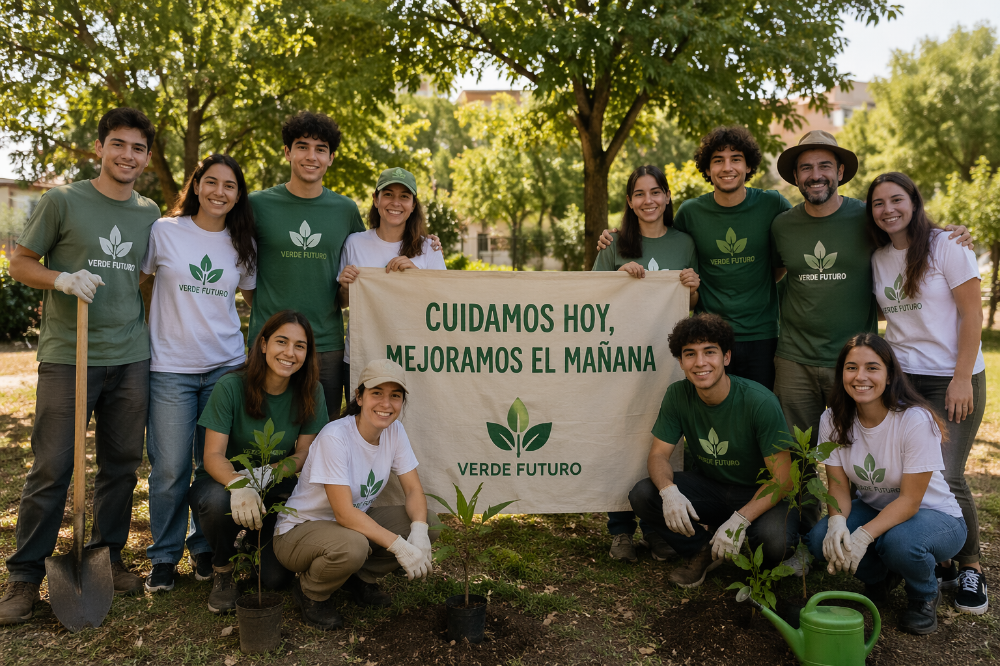

¿Quienes somos?
Somos una organización sin fines de lucro comprometida con el desarrollo social y el bienestar de la comunidad. Trabajamos mediante proyectos solidarios, actividades educativas y acciones comunitarias que buscan generar un impacto positivo y fomentar la participación de vecinos y voluntarios.

- Misión
- Promover el cuidado del medio ambiente mediante acciones concretas como la plantación de árboles, la educación ambiental y la recuperación de espacios públicos para mejorar la calidad de vida de la comunidad.
- Visión
- Construir una comunidad más consciente, participativa y comprometida con el desarrollo sostenible, fomentando el crecimiento de espacios verdes y el respeto por el entorno natural.
- Valores
- Compromiso ambiental, participación comunitaria, responsabilidad social, trabajo colaborativo y respeto por la naturaleza.
Nuestro equipo
- Coordinador de proyectos ambientales
- Kevin Nahuel Racedo
- Responsable de educación ambiental
- Lucas Nahuel Caballero
- Encargado de comunicación y difusión
- Nicolas Medina Russomanno